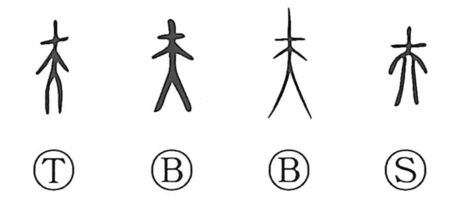

Explanation
夫 adds a hairpin to the head of 大, the frontal human figure. The short stroke above the outspread body marks an adult man in formal dress. 妻 provides the complementary female figure with her hair ornamented; together the two characters evoke the ceremonial dress of bridegroom and bride.
夫 consequently names an adult man and a husband. Bronze inscriptions also count men as so many 夫, particularly those supplying labour. 大夫 denotes an officer overseeing such work and later becomes a title.
In expressions such as 夫人 and 夫子, the character can mean ‘that person,’ providing an indirect, respectful designation for a lady or master. Classical uses also include an introductory particle and a sentence-final expression of feeling. These grammatical functions belong to the word's later range.